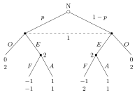

12 Bayesian games
Until now every player knew everyone’s payoffs. In reality a firm does not know a competitor’s costs, a bidder does not know the others’ valuations, a network node does not know whether its neighbour is selfish or malicious. Harsanyi’s insight was that such incomplete information can be absorbed into the familiar framework: let Nature draw each player’s private characteristics — their type — from a commonly known distribution, and let players form beliefs about types just as they form beliefs about actions. This chapter defines static Bayesian games and Bayesian Nash equilibrium and works through the standard examples.
12.1 Types and the common prior
A game has incomplete information if some player does not know another player’s payoff function. Each possible “version” of a player is called a type.
Harsanyi (1967–68) turned incomplete into imperfect information by adding a preliminary move of Nature:
- Nature draws a type vector \((t_1, \dots, t_n)\) from a probability distribution \(\phi\);
- each player \(i\) observes only their own type \(t_i\);
- players choose their actions;
- payoffs, which may depend on the types, are realised.
The result is a dynamic game in which players do not observe all of Nature’s move. Types need not describe preferences only: they can capture what a player knows about the world or about other players.
An entrant (player 1) stays Out, getting \(0\) while the incumbent gets \(2\), or Enters. After entry the incumbent (player 2) Accepts, giving \((1,1)\), or Fights. A rational incumbent gets \(-1\) from fighting (so does the entrant); a crazy incumbent enjoys fighting and gets \(2\). Nature makes the incumbent rational with probability \(p\); the entrant does not observe the type.

Figure: the entry game with a rational (left) or crazy (right) incumbent; the entrant’s two nodes form one information set.
To best-respond, the entrant needs beliefs about the incumbent’s type. We assume that players do not know the opponents’ types but know how they are drawn:
The distribution \(\phi\) of type vectors is common knowledge.
12.2 Type-contingent strategies
A strategy must now say what each type does. In the entry game the entrant has one type and two strategies; the incumbent moves at two information sets (one per type) and has four strategies \(xy\): \(x\) for the rational type, \(y\) for the crazy type. Expected payoffs follow from the prior; for instance under \((E, AF)\) the entrant gets \(p \cdot 1 + (1-p)(-1) = 2p - 1\) and the incumbent \(p \cdot 1 + (1-p) \cdot 2 = 2 - p\):
| 1 \ 2 | AA | AF | FA | FF |
|---|---|---|---|---|
| O | 0, 2 | 0, 2 | 0, 2 | 0, 2 |
| E | 1, 1 | \(2p-1\), \(2-p\) | \(1-2p\), \(1-2p\) | −1, \(2-3p\) |
For \(p = \tfrac23\) the entries of row \(E\) are \((1,1)\), \((\tfrac13, \tfrac43)\), \((-\tfrac13, -\tfrac13)\), \((-1, 0)\), and the game has three pure Nash equilibria: \((O, FA)\), \((O, FF)\) and \((E, AF)\). Only \((E, AF)\) is sequentially rational: each incumbent type does what is best for that type once entry has occurred (a rational incumbent accepts, a crazy one fights). If \(p < \tfrac12\), then \(2p - 1 < 0\) and the sensible outcome becomes \((O, AF)\): the incumbent always plays \(AF\), and the entrant decides on the basis of the prior.
Remark (Type agents). The entrant averages over the incumbent’s types — natural. The incumbent, oddly, “takes expectations over its own types”: the real players (rational 2, crazy 2) are replaced by a single meta-player choosing a plan for both. This type-agent representation gives the right best responses because a plan maximises the expected payoff iff each type’s component maximises that type’s payoff (the types’ choices do not interact). The common prior is a strong assumption — it must hold for players to be able to conjecture the outcome — and its realism must be checked in every application.
12.3 Static Bayesian games
A static Bayesian game is \[G = \{\mathcal N;\ A_1, \dots, A_n;\ T_1, \dots, T_n;\ \phi_1, \dots, \phi_n;\ u_1, \dots, u_n\},\] where \(A_i\) are action sets, \(T_i\) type spaces, \(\phi_i(t_{-i} \mid t_i)\) player \(i\)’s beliefs about the others’ types, and \(u_i(a_1, \dots, a_n; t_i)\) type-dependent payoffs.
- Private values means \(u_i\) depends only on \(t_i\); with common (interdependent) values \(u_i\) depends on the whole type vector.
- Types can also restrict actions: if action \(H\) is available only with probability \(q\), give player \(i\) two types and set all payoffs of \(H\) to \(-\infty\) for the second type.
- With a common prior \(\phi(t_1, \dots, t_n)\), beliefs are posteriors by Bayes’ rule, \(\phi_i(t_{-i} \mid t_i) = \phi(t_i, t_{-i}) / \phi(t_i)\). Types are independent if \(\phi = \prod_i \phi(t_i)\), in which case beliefs equal the marginals.
- In principle one should model beliefs about beliefs about beliefs…; Harsanyi showed that the common prior collapses this hierarchy to first-order beliefs.
A pure strategy of player \(i\) is a map \(s_i : T_i \to A_i\); a mixed strategy is a distribution over such maps.
Why specify what every type does, when only one type is real? Not for player \(i\) — but for the others, who need to form beliefs about \(i\)’s behaviour. (The same reason led us to specify off-path behaviour in dynamic games.) From the opponents’ viewpoint, a player using a type-dependent pure strategy with randomly drawn type is indistinguishable from one using a mixed strategy.
A profile \(s^* = (s_1^*, \dots, s_n^*)\) is a Bayesian Nash equilibrium (BNE) if for every player \(i\) and every type \(t_i \in T_i\), the action \(s_i^*(t_i)\) maximises \(i\)’s expected payoff given their beliefs: \[s_i^*(t_i) \in \arg\max_{a_i \in A_i} \sum_{t_{-i}} \phi_i(t_{-i} \mid t_i)\; u_i\bigl(a_i, s_{-i}^*(t_{-i}); t_i\bigr).\]
Equivalently, \(\mathbb E[u_i(s_i^*(t_i), s_{-i}^*(t_{-i}); t_i) \mid t_i] \geq \mathbb E[u_i(a_i, s_{-i}^*(t_{-i}); t_i) \mid t_i]\) for all \(a_i\): nobody wants to change given what they know, and what they don’t know they estimate. With continuous types the sums become integrals.
12.4 Harsanyi’s purification of mixed strategies
Mixed strategies were interpreted as beliefs (Chapter 5). Harsanyi made this precise: a mixed equilibrium is the limit of pure equilibria of slightly perturbed games of incomplete information.
Perturb the Battle of the Sexes: Ann’s payoff at \((R,R)\) becomes \(2 + c\) and Brian’s at \((S,S)\) becomes \(2 + d\), where \(c, d\) are independent, uniform on \([0, x]\), and privately known. Look for threshold strategies: Ann plays R iff \(c > C\); Brian plays S iff \(d > D\).
Ann does not know \(d\); Brian plays R with probability \(D/x\). Her expected payoffs are \((2 + c) D/x\) from R and \(1 - D/x\) from S, so she plays R iff \(c \geq x/D - 3\); hence \(C = x/D - 3\). Symmetrically \(D = x/C - 3\). Thus \(C = D\) and \[C^2 + 3C - x = 0 \quad\Longrightarrow\quad C = \frac{-3 + \sqrt{9 + 4x}}{2}.\] Ann plays R with probability \[1 - \frac{C}{x} = \frac{2x + 3 - \sqrt{9 + 4x}}{2x} \xrightarrow[x \to 0]{} \frac23,\] which is exactly her probability in the mixed NE. As the perturbation vanishes, players who never actually randomise generate, from each other’s viewpoint, the mixed equilibrium.
12.5 Examples
Two youngsters drive towards each other. A Chicken (who swerves) gets \(0\); a Driver gets respect \(8\) against a chicken; if both drive they split the respect (\(4\) each) but crash and receive a punishment \(P\) from their parents: \(P = 16\) for Hard parents, \(P = 0\) for Lenient ones, each with probability \(\tfrac12\), independently. Each youngster knows only their own parents’ type. A strategy \(xy\) is the action of the L-type and of the H-type. Expected payoffs:
| CC | CD | DC | DD | |
|---|---|---|---|---|
| CC | 0, 0 | 0, 4 | 0, 4 | 0, 8 |
| CD | 4, 0 | −1, −1 | −1, 3 | −6, 2 |
| DC | 4, 0 | 3, −1 | 3, 3 | 2, 2 |
| DD | 8, 0 | 2, −6 | 2, 2 | −4, −4 |
The BNE is \((DC, DC)\): lenient-parent kids drive, hard-parent kids swerve. Check type by type: against \(DC\) the opponent drives with probability \(\tfrac12\); an L-type gets \(\tfrac12 \cdot 4 + \tfrac12 \cdot 8 = 6 > 0\) by driving, an H-type gets \(\tfrac12 (4 - 16) + \tfrac12 \cdot 8 = -2 < 0\).
A jury of two decides whether to Acquit or Convict; conviction requires both votes. The defendant is guilty (G) with common prior \(q > \tfrac12\). Each juror gets payoff \(1\) for a correct verdict, \(0\) otherwise. Without further information C is dominant.
Now each juror receives a private, conditionally independent signal \(t_i \in \{t_G, t_I\}\) with \(\Pr[t_G \mid G] = \Pr[t_I \mid I] = p > \tfrac12\) — a binary symmetric channel. A lone juror would update \[\Pr[G \mid t_G] = \frac{qp}{qp + (1-q)(1-p)} > q, \qquad \Pr[G \mid t_I] = \frac{q(1-p)}{q(1-p) + (1-q)p},\] and the latter is below \(\tfrac12\) iff \(p > q\): when the signal is more informative than the prior, a lone juror follows it.
With two jurors, is “follow the signal” (\(CA\): convict on \(t_G\), acquit on \(t_I\)) an equilibrium? The key is pivotality: a vote matters only if the other juror votes C, i.e. (under \(CA\)) only if the other received \(t_G\). Conditioning on that event, \[\Pr[G \mid t_1 = t_I, t_2 = t_G] = \frac{q\,p(1-p)}{q\,p(1-p) + (1-q)(1-p)p} = q > \tfrac12,\] so a juror with an innocent signal should convict: \(CA\) is not a best response to itself. Reasoning about the pivotal event biases jurors toward conviction, even against their own informative signal. (For \(p \leq q\), \((CC, CC)\) is a BNE; for \(p > q\) the symmetric equilibrium has \(t_I\)-jurors convicting with a probability strictly between \(0\) and \(1\), as in Feddersen and Pesendorfer’s analysis of the unanimity rule.)
Two students share a project. Each either puts Effort (cost \(c\)) or Shirks. The project succeeds if at least one puts effort, giving student \(i\) value \(t_i^2\), with \(t_i \sim \mathcal U[0,1]\) privately known:
| E | S | |
|---|---|---|
| E | \(t_A^2 - c\), \(t_B^2 - c\) | \(t_A^2 - c\), \(t_B^2\) |
| S | \(t_A^2\), \(t_B^2 - c\) | 0, 0 |
With a continuum of types there are infinitely many strategies, but best responses are of threshold form: E gives \(t_i^2 - c\) regardless, S gives \(t_i^2 \Pr[s_j(t_j) = E]\), so \(i\) prefers E iff \(t_i^2 \geq c / (1 - \Pr[s_j(t_j) = E])\). (A lone student would put effort iff \(t_i^2 \geq c\).) If \(j\) uses threshold \(\theta_j\) (effort iff \(t_j \geq \theta_j\)), then \(\Pr[E_j] = 1 - \theta_j\) and \(i\)’s best threshold is \(\theta_i = \sqrt{c/\theta_j}\). The symmetric BNE has \(\theta^2 = c / \theta\), i.e. \[\theta^* = c^{1/3} \qquad (c < 1).\] Since \(c^{1/3} > c^{1/2}\), each student works less often than alone: free-riding on the partner.
12.6 Two classic applications
Cournot with a private cost. Firm 1 has unit cost \(c\), known to all. Firm 2’s cost is \(c_H\) with probability \(\theta\) and \(c_L\) otherwise, known only to firm 2; demand is \(a - Q\). Each type of firm 2 best-responds to \(q_1\), and firm 1 best-responds to firm 2’s expected output: \[q_2(c_2) = \frac{a - c_2 - q_1}{2}, \qquad q_1 = \frac{a - c - \mathbb E[q_2]}{2} \quad\Longrightarrow\quad q_1^* = \frac{a - 2c + \bar c_2}{3},\qquad \bar c_2 = \theta c_H + (1-\theta)c_L,\] and \(q_2^*(c_2) = \frac{2a + 2c - 3c_2 - \bar c_2}{6}\). Compared with complete information, the high-cost type produces more (by \((c_H - \bar c_2)/6\)) and the low-cost type less. Firm 1 cannot tailor its output to the true cost, so each type of firm 2 faces an “average” rival.
Adverse selection: the market for lemons (Akerlof, 1970). Used cars have quality \(\theta \sim \mathcal U[0, 1]\), known to the seller, who values a car at \(\theta\); buyers value it at \(\tfrac32\theta\). Trade would be efficient for every car. At a price \(p\) only owners with \(\theta \leq p\) sell, so the average quality on offer is \(p/2\) and buyers are willing to pay \(\tfrac32\cdot\tfrac p2 = \tfrac34p < p\). No price clears the market, and only \(\theta = 0\) trades. Private information can destroy a market completely. Warranties, inspections, reputation and signalling (Chapter 13) exist to repair it.
Remark (A taxonomy of dynamic Bayesian games). When the uninformed player moves first and the informed one reacts (a screening or Bayesian entry game), the uninformed player can only use the prior. Backward induction on each type’s decision node gives a subgame-perfect answer, and no belief updating is needed. When the informed player moves first (a signaling game), the action may reveal the type, and the responder’s beliefs after each action must be specified. This is where perfect Bayesian equilibrium (Chapter 13) is required.
12.7 Exercises
Problems from Badia and Marchioro (BM), Chapter 6: static Bayesian games and screening games.
(BM 6.1) Stevie is Good (G) or Naughty (N). If naughty, he gets nothing: Stevie \(0\), parents \(-10\). If good, the parents give a Sweater (\(-10\) for Stevie, \(0\) for them) or a Train (\(+40\) for Stevie, \(+20\) for them), but the train costs them \(50\) unless Santa exists. Stevie believes Santa exists with probability \(p\); the parents know. Write the type-agent normal form and find the pure BNE for \(p = 0.9\). Which are subgame perfect?
Solution. The parents’ strategies are pairs (Santa, no Santa). Row G: SS \((-10, 0)\), ST \((40 - 50p, 30p - 30)\), TS \((50p - 10, 20p)\), TT \((40, 50p - 30)\); row N: \((0, -10)\) throughout. For \(p = 0.9\): G gives \((-10, 0)\), \((-5, -3)\), \((35, 18)\), \((40, 15)\). BNE: \((N, SS)\), \((N, ST)\), \((G, TS)\). Only \((G, TS)\) is subgame perfect: giving a sweater when the train is free is not optimal. Stevie behaves because he believes in Santa: against TS, being good is worth \(50p - 10\), so for \(p < 0.2\) he would be naughty.
(BM 6.3) An opportunistic transmitter T either Buys a licensed channel (\(-10\); the incumbent S gets \(100\)) or Accesses S’s band. S then Combats it (T gets \(-20\); S gets \(90\) with high power, \(50\) without) or does nothing (T \(20\), S \(80\)). S has high power with probability \(p = 0.7\). Find the BNE and the SPE.
Solution. S’s strategies are (high, low). Row A: CC \((-20, 78)\), CD \((-8, 87)\), DC \((8, 71)\), DD \((20, 80)\); row B: \((-10, 100)\). BNE: \((A, CD)\) and \((B, CC)\). Sequential rationality requires C when strong (\(90 > 80\)) and D when weak (\(80 > 50\)), so CD. Then T compares \(-8\) (A) with \(-10\) (B) and accesses. SPE \((A, CD)\). In \((B, CC)\) the weak incumbent’s threat to fight is not credible. This is the Bayesian entry game in a cognitive-radio setting.
(BM 6.4) Henchmen Franco and Gino each act Conspicuously or Inconspicuously. At least one C gives a reward of \(10\) each, but both C gets them arrested (\(-30\)). With probability \(p = 0.3\) Franco is an undercover cop, who gets \(20\) if both are arrested and \(0\) otherwise. Find the BNE.
Solution. Franco’s strategies are (cop, crook). For \(p = 0.3\) the payoffs (Gino, Franco) are: Gino C against CC, CI, IC, II gives \((-30, -15)\), \((-2, 13)\), \((-18, -21)\), \((10, 7)\); Gino I gives \((10, 7)\), \((3, 0)\), \((7, 7)\), \((0, 0)\). Gino’s best responses are I, I, I, C. Franco’s best response to C is CI, and to I it is CC or IC. Pure BNE: \((CC, I)\) and \((IC, I)\). In general, Gino plays I, the crook plays C, and the cop is indifferent, so any mixture of the cop’s actions is part of a BNE. With a single information set for Gino, every BNE is subgame perfect. The PBE beliefs on Gino’s four nodes are \((0.3\alpha, 0.3(1-\alpha), 0.7, 0)\).
(BM 6.5) Short-sighted John Greets or Ignores a girl who is Camilla with probability \(p = 0.3\). Ignoring gives John \(-20\), and the girl \(-50\) if she is Camilla (\(0\) otherwise). After a greeting she Waves (John \(10\); the girl \(30\) if Camilla, \(10\) otherwise) or stays Silent (John \(-50\) and Camilla \(10\) if she is Camilla; \(0\) and \(0\) otherwise). Find the BNE.
Solution. Row G against SS, SW, WS, WW: \((-15, 3)\), \((-5, 10)\), \((3, 9)\), \((10, 23)\); row I: \((-20, -15)\) throughout. Waving is optimal for both types, and John’s best response to WW is G. Ignoring is never a best response (every G entry exceeds \(-20\)). The unique BNE \((G, WW)\) is also the SPE, and John’s belief is simply the prior.
(BM 6.11) Emma (Aquamarine or Beige) and Frank (Azure or Brown) dress for a wedding. Matching azure gives \(3\) each, matching brown \(2\), mismatch \(0\). With probability \(p = 0.8\) Frank’s suits are dirty: a dirty brown suit costs both \(1\); a dirty azure suit costs Frank \(3\) and Emma \(5\). Find the pure BNE.
Solution. Frank’s strategies are (dirty, clean). Emma A against AA, AB, BA, BB: \((-1, 0.6)\), \((-1.6, 0)\), \((-0.2, -0.2)\), \((-0.8, -0.8)\); Emma B: \((-4, -2.4)\), \((-3.6, -2)\), \((0.8, 0.8)\), \((1.2, 1.2)\). Against A, both of Frank’s types match with A (dirty: \(0 > -1\); clean: \(3 > 0\)), and against AA Emma prefers A (\(-1 > -4\)). Against B, both types play B, and Emma prefers B. Two pure BNE: \((A, AA)\) and \((B, BB)\), the second Pareto dominant. (The printed solution lists only \((B, BB)\).) Incomplete information has turned a coordination game into one where the matching colour is worse when dirty, but coordination on azure still survives.
(BM 6.13) Alberto and Gianluca apply to Coimbra or Santander. Gianluca gets \(2\) (together in C), \(1\) (together in S), \(0\) apart. With probability \(p\) Alberto is chasing a girl in Santander: then S is dominant, giving him \(2\) (C gives \(0\)). Otherwise he has Gianluca’s preferences. Find the pooling BNE, and the values of \(p\) for which a separating BNE exists.
Solution. Against Alberto’s pooling SS, Gianluca plays S (\(1 > 0\)), and S is a best response for both of Alberto’s types: \((SS, S)\) is a BNE for every \(p\). If Gianluca plays C, Alberto’s best response is SC (the chaser goes to S, the other to C). Against SC Gianluca gets \(2(1 - p)\) from C and \(p\) from S. So \((SC, C)\), a separating BNE, exists iff \(p \leq 2/3\). With a small chance of romance, the friends can still coordinate on the better destination.
(BM 6.14) Jane Keeps her €10 000 or buys a Car (€8000; worth €5000 after a year). Simultaneously the bank Leaves the money (5% interest) or buys Subprime bonds: a good bank (probability \(p = 0.2\)) earns 15%, a bad bank loses everything. The bank’s payoff is the interest \(G\) if positive, \(-G/5\) otherwise. Find the BNE.
Solution. In k€: for Jane, K–L gives \(10.5\), K–S gives \(11.5\) (good bank) or \(0\) (bad bank); C–L gives \(7.1\), C–S gives \(7.3\) or \(5\). The bank’s payoffs are \(0.5\), \(1.5\), \(2\) and \(0.1\), \(0.3\), \(0.4\) respectively. For both types of bank, S is strictly better whatever Jane does, so SS is dominant. Against SS, Jane gets \(11.5p = 2.3\) from K and \(5 + 2.3p = 5.46\) from C. The unique BNE is \((C, SS)\): Jane spends her money because the bank would gamble it away. The incentive structure (\(-G/5\) rewards losses) is what makes every type of bank reckless.
(BM 6.17) A thief Enters or Flees; simultaneously the sheriff Patrols or Quits. The sheriff is armed with probability \(0.3\). Flee: thief \(0\), and the sheriff \(-10\) if patrolling, \(0\) if quitting. Enter against Quit: thief \(10\), sheriff \(0\). Enter against Patrol: if armed, thief \(-100\) and sheriff \(20\); if unarmed, both \(-20\). Find the BNE.
Solution. Sheriff strategies are (armed, unarmed). Thief E against PP, PQ, QP, QQ: \((-44, -8)\), \((-23, 6)\), \((-11, -14)\), \((10, 0)\); F: \((0, -10)\), \((0, -3)\), \((0, -7)\), \((0, 0)\). An unarmed sheriff never patrols (\(-20\) or \(-10 < 0\)), so PP and QP are out, and there is no pure BNE (QQ invites entry, PQ deters it). The armed sheriff mixes P with \(\rho\), the thief enters with \(\varepsilon\). Armed indifference: \(20\varepsilon - 10(1 - \varepsilon) = 0\), so \(\varepsilon = 1/3\). Thief indifference: \(0.3(10 - 110\rho) + 0.7\cdot10 = 0\), so \(\rho = 10/33\). The unarmed sheriff stays home; the armed one patrols with probability \(10/33\).
From the course material:
Two interns independently choose an operating system, M or W. Each prefers M with probability \(p\) and W with probability \(1-p\) (independently, privately known, \(p\) common knowledge). Using the favourite OS gives \(1\), the other \(0\); choosing the same OS as the partner adds \(2\). For which \(p\) is “follow your type” a BNE?
Solution. Suppose the partner follows their type: they choose M with probability \(p\). An M-type gets \(1 + 2p\) from M and \(0 + 2(1-p)\) from W; M is optimal iff \(1 + 2p \geq 2 - 2p\), i.e. \(p \geq \tfrac14\). A W-type gets \(1 + 2(1-p)\) from W and \(2p\) from M; W is optimal iff \(3 - 2p \geq 2p\), i.e. \(p \leq \tfrac34\). “Follow your type” is a BNE iff \(\tfrac14 \leq p \leq \tfrac34\); outside this range the minority type conforms to the likely choice of the majority.
In the study-group game with \(c = 0.125\), compute the equilibrium probability that the project fails.
Solution. \(\theta^* = 0.125^{1/3} = 0.5\). Each student shirks with probability \(0.5\); the project fails iff both shirk: probability \(0.25\). (A single student working alone would shirk only if \(t < \sqrt{0.125} \approx 0.354\).)
12.8 Sources
Prof. Badia, Game Theory slides, decks Gth2014 (Bayesian games, types, common prior, BNE, purification) and Gth2015 (Chicken, committee voting) and the study-group example from Gth2017; exercise sheet gt20b. Tadelis, Game Theory: An Introduction, Chapter 12. Original references: J. Harsanyi, Games with incomplete information played by “Bayesian” players, Management Sci. 14 (1967–68); J. Harsanyi, Int. J. Game Theory 2, 1 (1973); T. Feddersen and W. Pesendorfer, Am. Polit. Sci. Rev. 92, 23 (1998). Exercises: L. Badia and T. Marchioro, Game Theory: A Handbook of Problems and Exercises, Esculapio (2022), Chapter 6. G. Akerlof, The market for “lemons”, Q. J. Econ. 84, 488 (1970).